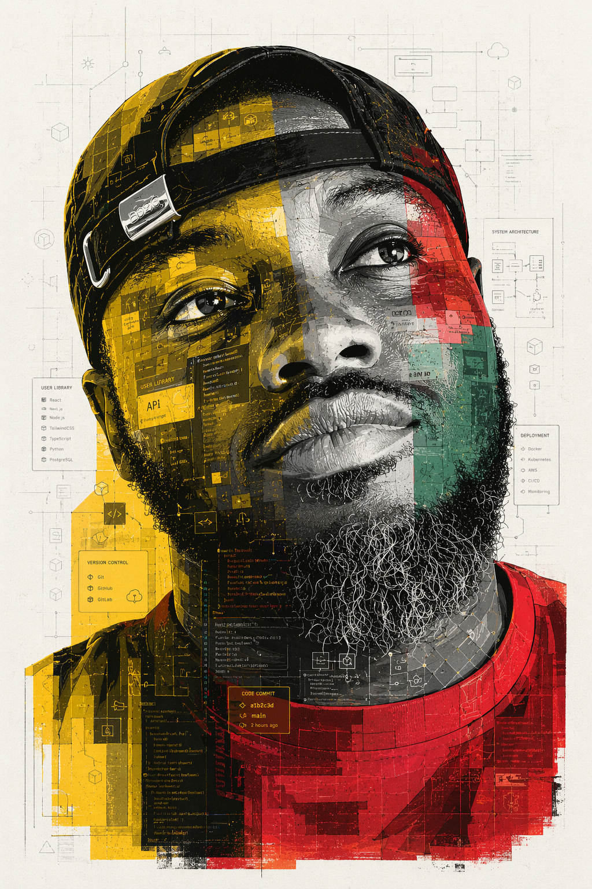

Ghana POS System
CompleteA fully functional JavaFX-based Point of Sale system built with a layered MVU architecture, designed around Ghana-specific retail needs including MoMo payment capture and automatic VAT calculation.
Software Developer
I'm Francis K. Amponsah-Siaw — an MSc Information Technology student at the University of Cape Coast, building Java applications, AI-driven fraud detection systems, and full-stack tools, with an eye trained by photography for detail and composition.

About
Winneba · Central Region · Ghana
I'm Francis K. Amponsah-Siaw — a first-year MSc Information Technology student at the University of Cape Coast's College of Distance Education, building on earlier coursework in database systems and systems administration. My work sits at the intersection of practical software engineering and applied AI — with a particular interest in solving problems relevant to Ghana's digital economy, from mobile money to small-business point-of-sale tools.
Outside of code, I spend time behind a camera, and I'm involved with scholarship administration work for a local foundation. I drive a well-loved 2012 Hyundai Accent and I'm active with Grace Presbyterian Church in Winneba.
Selected Work
A fully functional JavaFX-based Point of Sale system built with a layered MVU architecture, designed around Ghana-specific retail needs including MoMo payment capture and automatic VAT calculation.
A comprehensive fraud detection system for Ghana's Mobile Money ecosystem, pairing a Python/FastAPI backend and a React frontend with an ensemble machine learning model trained to flag suspicious transaction patterns.
A browser-based tool that analyses incoming emails for phishing indicators in real time, built as part of an applied AI coursework project on fraud and threat detection.
Configured a computer lab environment around a Windows Server 2019 machine and 30 Dell Wyse 7010 thin clients, including Remote Desktop Services and roaming profiles for a shared, centrally-managed workstation experience.
Contact
Send a message about a project, question, or opportunity, or reach out directly using the details on the right.